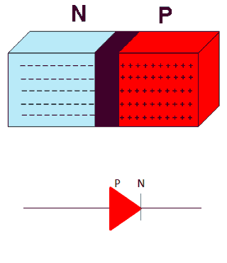
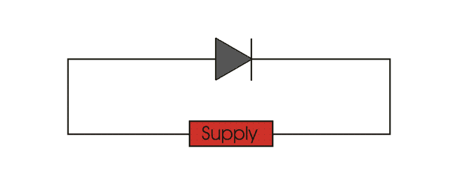
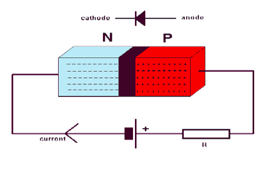
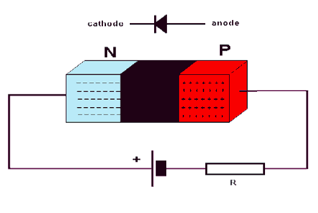

Reverse Biasing Characteristic of Diode
Avalanche Breakdown(for V> 5V)
Zener Effect (for V<5V)
Semiconductor materials (Si, Ge) are used to form variety of electronic devices. The most basic device is diode. Diode is a two terminal P-N junction device. P-N junction is formed by bringing a P type material in contact with N type material. When a P-type material is brought in contact with N- type material electrons and holes start recombining near the junction. This result in lack of charge carriers at the junction and thus the junction is called depletion region.
Symbol of P-N junction is given as:

Biased i.e. when voltage is applied across the terminals of P-N junction, it is called diode. Diode is unidirectional device that allows the flow of electric current in one direction only depending on the biasing.

Forward Biasing Characteristic of Diode
When P terminal is more positive as compared to N terminal i.e. P- terminal connected to positive terminal of battery and N-terminal connected to negative terminal of battery , it is said to be forward biased.

Positive terminal of the battery repels majority carriers, holes, in P-region and negative terminal repels electrons in the N-region and push them towards the junction. This result in increase in concentration of charge carriers near junction, recombination takes place and width of depletion region decreases. As forward bias voltage is raised depletion region continues to reduce in width, and more and more carriers recombine. This results in exponential rise of current.
Reverse Biasing Characteristic of Diode
In reverse biasing P- terminal is connected to negative terminal of the battery and N- terminal to positive terminal of battery . Thus applied voltage makes N-side more positive than P-side.

Negative terminal of the battery attracts majority carriers, holes, in P-region and positive terminal attracts electrons in the N-region and pull them away from the junction. This result in decrease in concentration of charge carriers near junction and width of depletion region increases. A small amount of electric current flow due to minority carriers, called as reverse bias electric current or leakage current. As reverse bias voltage is raised depletion region continues to increase in width and no electric current flows. It can be concluded that diode acts only when forward biased. Operation of diode can be summarized in form of I-V diode characteristics graph.
For reverse bias diode, V<0, ID = IS
Where, V = supply voltage
ID = diode current
IS = reverse saturation current
For forward bias, V > 0, ID = IS(eV/NVT - 1)
Where, VT = volt’s equivalent of temperature = KT/Q = T/11600
Q = electronic charge = 1.632 X 10 - 19 C
K = Boltzmann’s constant = 1.38 X 10 - 23
N = 1, for Ge
= 2, for Si
Diode Characteristics
As reverse bias voltage is further raised, depletion region width increases and a point comes when junction breaks down. This results in large flow of current. Breakdown is the knee of diode characteristics curve. Junction breakdown takes place due to two phenomena:
Avalanche Breakdown(for V> 5V)
Under very high reverse bias voltage kinetic energy of minority carriers become so large that they knock out electrons from covalent bonds, which in turn knock more electrons and this cycle continues until and unless junction breakdowns.
Zener Effect (for V<5V)
Under reverse bias voltage junction barrier tends to increase with increase in bias voltage. This results in very high static electric field at the junction. This static electric field breaks covalent bond and set minority carriers free which contributes to reverse current. Current increases abruptly and junction breaks down.
 by
by